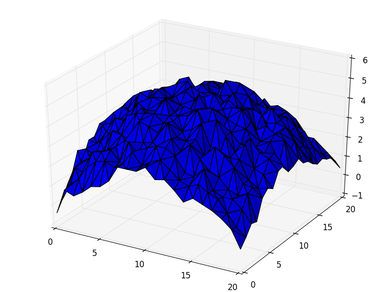

X Y R
1 1 3.4 1 2 4.5 1 3 4.5 1 4 2.5 ... 20 20 1.0

import plotting_library
import numerics_library
import date_library
import file_info_library
# Load rainfall data
X, Y, rainfall = numerics_library.load_csv("rainfall-radar.csv")
# Some clever 3D plotting
axes = plotting_library.create_axes()
axes.plot_wireframe(X, Y, rainfall)
# Save image labelled by day data created
creation_timestamp = file_info_library.created("rainfall-radar.csv")
d = date_library.make_date(creation_timestamp)
image_filename = "%d-%d-%d-rainfall.png" % d.year, d.month, d.day
plotting_library.save_an_image(image_filename)
from matplotlib import pyplot
from mpl_toolkits.mplot3d import Axes3D, axes3d
import numpy
import datetime
import os
# Load rainfall data
X, Y, rainfall = numpy.loadtxt("rainfall-radar.csv").T
# Some clever 3D plotting
fig = pyplot.figure()
axes = Axes3D(fig)
axes.plot_trisurf(X, Y, rainfall)
# Save image labelled by day data created
creation_timestamp = os.path.getctime("rainfall-radar.csv")
d = datetime.date.fromtimestamp(creation_timestamp)
image_filename = "%d-%d-%d-rainfall.png" % (d.year, d.month, d.day)
pyplot.savefig(image_filename)
Files
university_qub.txt university_uu.txt school_st-malachys.txt community_glencraig.txt school_rudolf-steiner-hw.txt college_stranmillis.txt ...
Files
universities/ qub.txt uu.txt ... schools/ st-malachys.txt rudolf-steiner-hw.txt ... colleges/ stranmillis.txt ... communities/ glencraig.txt ... ...
# Loop through files
for filename in file_info_directory.list_current_directory():
# Skip irrelevant files
if filename does not end with '.txt':
continue
# Divide into important parts and find category name
institution_type, institution = split(filename)
category = pluralization_library.plural(institution_type)
# Check we have a subdirectory for it
if category is not already a directory:
directory_library.mkdir(category)
# Join subdirectory and filename (whether on Win, Mac & Linux)
final_location = directory_library.join(category, institution)
directory_library.move(filename, final_location)
pluralizer = inflect.engine()
# Loop through files
for filename in os.listdir():
# Skip irrelevant files
if not filename.endswith('txt'):
continue
# Divide into important parts and find category name
institution_type, institution = filename.split('_')
category = pluralizer.plural(institution_type)
if not os.path.exists(category):
os.mkdir(category)
final_location = os.path.join(category, institution)
os.rename(filename, final_location)
CHAPTER 1
Once there were four children whose names were Peter, Susan, Edward and Lucy...
There are ???? verbs in this text.
lines = input.read_everything()
Ummm....
import nltk
import sys
import collections
lines = sys.stdin.readlines()
# Natural Language researcher magic...
tokens = nltk.word_tokenize(lines)
body_of_text = nltk.Text(tokens)
words_labelled_by_type = nltk.pos_tag(body_of_text)
# Back to more standard Python
type_of_each_word = [t for word, t in words_labelled_by_type]
types_by_frequency = collections.Counter(type_of_each_word)
print("There are %d verbs in this text" % types_by_frequency['VB'])